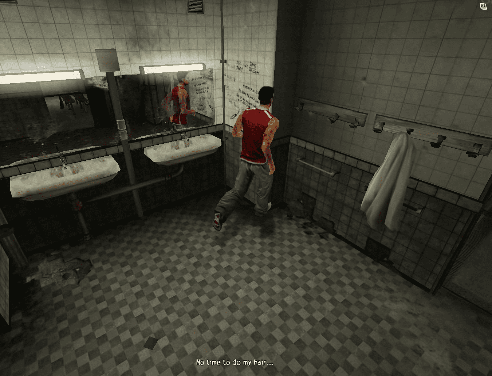
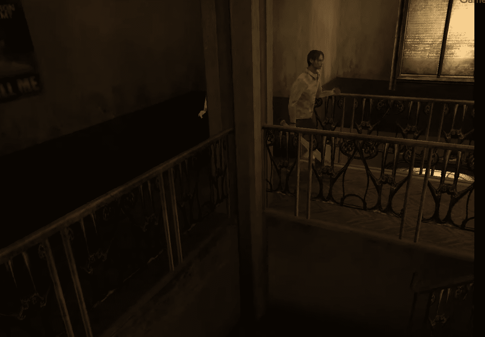
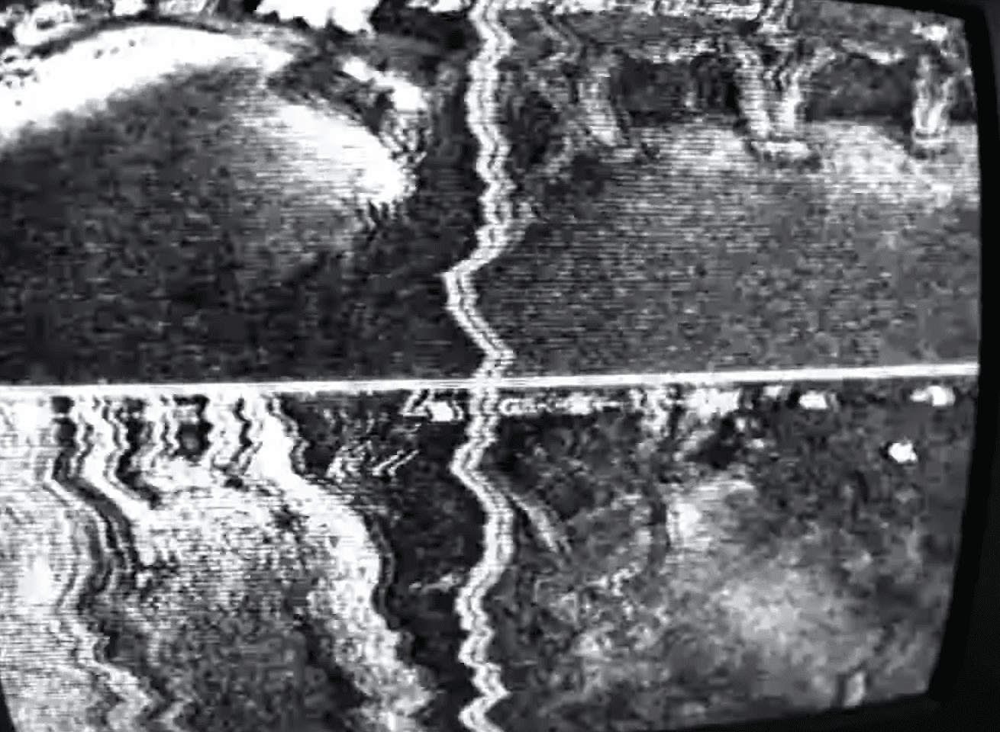
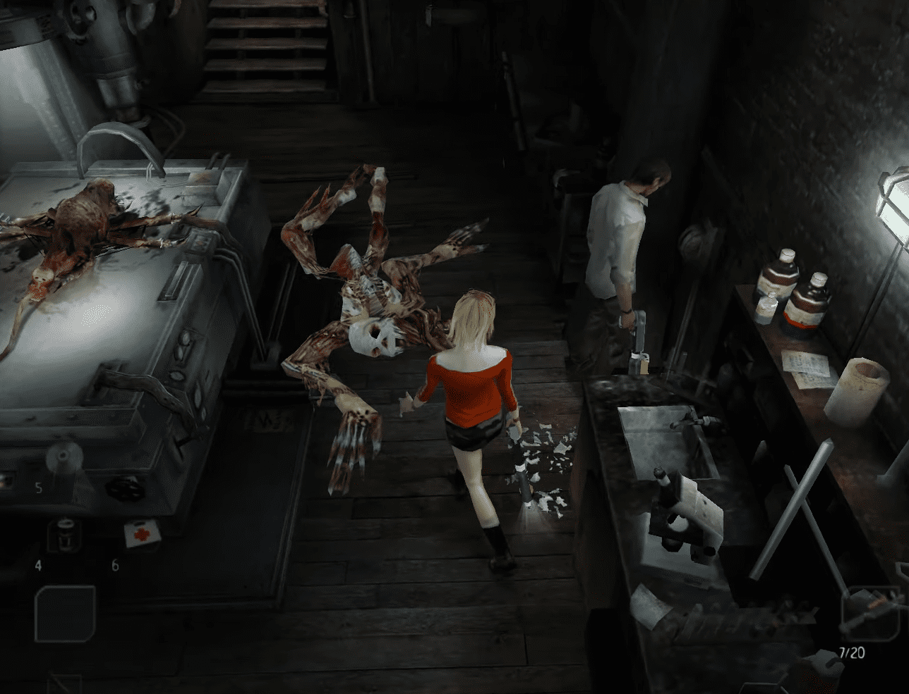
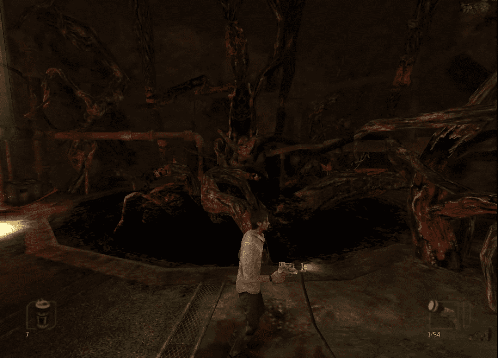

Edificio H: Justo después de las escenas cinemáticas, controlas a Kenny. Ve al vestuario y usa el teléfono celular. Ahora debes perseguir al tipo que te robó la bolsa. Sal de aquí y usa la puerta a tu derecha. Estás en el jardín, sigue al tipo hasta la cueva. Entra en la cueva y toma la linterna, la pistola y la cinta adhesiva. El tutorial te enseña cómo combinar objetos. Ahora usa la escalera para entrar en la cueva. Dentro, sigue el pasillo. Aquí está la primera trampa, usa el modo de aumento de tu linterna para disipar la luz oscura. Entra en la siguiente habitación. Solo puedes salir de aquí usando una puerta a la izquierda de la habitación. Luego solo puedes entrar en una celda donde se une contigo un estudiante, Dan. Luego sale contigo y toma una pistola. Sal y serás emboscado por un superzombi y algunas criaturas pequeñas. Corre hacia la salida ya que no puedes derrotar al superzombi y empuja la caja para liberar la puerta. Dan ya no te seguirá. Corre hacia la salida y verás al tipo cerrando la salida.

Edificio A: Ahora controlas a Josh. Toma el bate y el CD. Rompe el distribuidor y toma la bebida energética. Rompe la ventana y abre la puerta. Obtienes un ganzúa. Con ella abre la puerta de esta habitación para salir al pasillo. Ve al vestíbulo y toma el mapa del edificio. Continúa recto para llegar a los baños para hombres. Encuentras una bebida energética. Visita la habitación enfrente de los baños de mujeres para encontrar una cinta adhesiva. Visita los baños de mujeres. Si tienes un compañero contigo, ayúdalo a alcanzar el conducto de aire. (si no, ve y llévalo contigo). Llegas a la sala de personal. Encuentras aquí una llave vieja, una bebida energética y algunos artículos. Sube las escaleras. En esta habitación encuentras un CD y la llave de la sala de personal. Con ella puedes abrir una puerta a 1F y las 2 puertas de abajo hacia el vestíbulo. Puedes salir a la biblioteca de exámenes y notarás que necesitarás una manivela (más tarde, por supuesto). Sal al primer piso. Rompe una ventana y empuja un armario para encontrar un destornillador en el suelo. Ahora sal y ve a 2F. Usa la llave vieja para entrar aquí. Una vez dentro, sube las escaleras y lucha contra las criaturas pequeñas. Walden vendrá y te ayudará rompiendo las ventanas. La luz mata al monstruo. Walden sugiere ir al edificio B donde está Friedman. Ve al vestíbulo y sal al patio. Después de un video, toma el CD y ve al piso de arriba al balcón para encontrar otro. Luego ve al Edificio B.
Edificio B: Toma el mapa cerca de la entrada. Pasa la primera puerta que veas. En ella encontrarás a Stan. Contrólalo para desbloquear un armario y luego toma tres tazas en la tabla. Sal. En la siguiente habitación encontrarás una linterna y un arma. Combínalas y sal. Rompe los distribuidores para obtener algunas bebidas energéticas. Las siguientes habitaciones son los baños donde encontrarás un botiquín. No vayas al segundo piso ahora y avanza. Eres atacado por un superzombi, usa la luz para disipar la oscuridad y luego dispárale a él y a las criaturas pequeñas. Puedes entrar en la habitación usando el agujero en la pared. Toma los objetos aquí. Sal. En la última habitación encontrarás monstruos, un CD, una carta y un tanque de ácido. Ve al segundo piso y verás que la puerta está cerrada con llave. Ve a la habitación del tanque de ácido y usa la bebida para transportar el ácido a la puerta cerrada con llave. Tienes 30 segundos para hacerlo. Entra al segundo piso y ve a la derecha para desbloquear una puerta al balcón. Mata al zombi en este pasillo y luego vuelve a la puerta al balcón. Puedes desbloquear un armario en este pasillo. Desde esta ubicación, tienes 4 habitaciones a tu izquierda para visitar. Habitación 1: Encuentras la bolsa de Walden. Encuentras una brújula en ella. Mata a los zombis. Habitación 2: Desbloquea la puerta con la ayuda de Stan para ir más rápido. Encuentras municiones y bebidas energéticas. Habitación 3: Cerrada. Habitación 5: Entra y lee algunas coordenadas en un mapa en el suelo. 330° y 20°. Habitación 4: La oficina de Friedman. Toma el CD y escucha el mensaje. En la siguiente parte de esta oficina, toma la segunda brújula y mira la foto. Ahora acércate al cuadro e inserta las 2 brújulas en él. La brújula izquierda debe apuntar a 330° mientras que la derecha apunta a 20°. Si están insertadas correctamente, el cuadro se abrirá. Encuentras una cinta, una llave de la biblioteca y otras cosas. Ahora puedes salir al patio y el siguiente objetivo es ir al edificio C (la biblioteca).

Edificio C: Dentro del edificio, ves una escena con un zombi. No te acerques a él. Toma el mapa cerca de la entrada. Avanza y luego 2 zombis te atacarán. Primera habitación a la izquierda (desde la entrada): un CD. Segunda habitación a la izquierda: encuentras un proyector y algunos objetos aquí. Rompe la ventana y entra en la siguiente habitación. Encuentras un papel. Pon el papel en el proyector y obtendrás un código: 2432. Ingresa este código en la caja fuerte aquí y obtendrás una nueva llave y una carta. Hay otra puerta para desbloquear (con Stan si es posible) y dentro hay mucha oscuridad. Para disiparla, debes romper la ventana; de lo contrario, si no lo deseas, regresa a esta habitación después de que caiga la noche. Debes abrir un armario para encontrar una linterna de nivel 2. Ve a la biblioteca y ábrela con tu nueva llave. Toma los objetos aquí y habla con Friedman. Él quiere que vayas al conserje y le pidas que abra la puerta de salida para ti. Llega la noche. HABITACIÓN DEL CONSERJE: Entra y toma los objetos aquí. En la siguiente parte de la habitación encuentras un grabador de video y otra cinta. También encuentras la llave del edificio D.
Edificio D: Entra en esta enorme habitación y avanza mientras matas algunas arañas. Encuentras un CD, un mapa cerca de una puerta y municiones. Puedes pasar por una puerta hacia la cocina donde obtendrás una pistola y una bebida energética. Sal de la cocina y usa las escaleras. Aquí tendrás que jugar con el cableado eléctrico, pero primero necesitas encontrar 2 fusibles. Mata a los monstruos y sal a la siguiente habitación. Tendrás que matar a 2 super zombis y luego desbloquear un armario en el suelo para encontrar los fusibles. Regresa a la habitación anterior e insértalos. Juega con los cables para encender las 3 luces. Entonces la luz iluminará el edificio. Regresa a la habitación donde encontraste los fusibles y habla con la enfermera. Ella abrirá la puerta. Como está en estado de shock, no aprenderás mucho sobre toda la historia, pero puedes encontrar una manivela y algunas cosas útiles aquí. Ve a la biblioteca de exámenes para usar la manivela (en el edificio A) y accederás a la última habitación de este edificio. Encuentras en ella una película, un CD y algo de munición. Cuando regreses a la sala de personal, te encontrarás nuevamente con Walden y él te da la llave del edificio F.


Edificio F: 1F: En tu camino hacia el edificio F pasas por el estacionamiento y puedes desbloquear un camión. Mata a los monstruos aquí y entra al edificio. Mira la imagen y toma la cinta adhesiva. Cuando entras en la sala de conferencias, encuentras una tabla de madera y un botiquín. Puedes pasar por la puerta de la derecha. Lee una carta y luego pasa por la puerta. Usa el ascensor para llegar al piso superior. Jefe: BLOB Utiliza el modo de impulso de la linterna en el monstruo. Dispara a su cabeza y morirá. Utiliza nuevamente el ascensor para bajar. Ve a la sala de proyección. Mira la película. Vuelve a la sala con el ascensor. Inserta la tabla de madera y luego sube. Usa la palanca aquí y luego la escalera para bajar de nuevo. Puedes ir al nivel B1.
B1: Estás bloqueado aquí. Toma los objetos y sal. En el próximo pasillo, mata a 2 monstruos. Sal. En este pasillo hay 4 puertas, 2 a la derecha y 2 a la izquierda. Puerta 1 a la derecha: cerrada con llave. Puerta 2 a la derecha: Conduce a un pasillo con un estudiante y munición. Puerta 1 a la izquierda: Es una sala de operaciones. Encuentras un botiquín y una carta. Puerta 2 a la izquierda: Conduce a una habitación llena de cajas. Empuja una caja para encontrar una segunda escopeta. Empuja otra caja para abrir el camino hacia una cárcel. Guarda. Toma la palanca. Aparece un súper zombie. Corre hacia la puerta y luego mátalo. Toma la granada en su celda y sal. Cuando salgas, pelea contra 2 súper zombies. Ve a la sala de operaciones y usa la palanca para ir al sótano.
B2: En este pasillo, toma la munición y pasa por la puerta. Después de las escenas, despiertas en una cárcel. Has encontrado a Kenny. Toma el gancho y luego cambia de personaje (presiona F) porque con el gancho, él (o ella) abrirá la cárcel. Toma las enormes tenazas y abre el cofre con ellas. Recuperas todas las armas e items que habías perdido. Sal y regresa al pasillo anterior. Mata a un monstruo y puedes saltar sobre la caja, usa el gancho para tirar de la escalera y salir al patio. Toma el CD, notas un código de acceso y el edificio E. Regresa al patio. Ve a la guardería y encuentras que la enfermera está muerta. Puedes usar las tenazas para ir al edificio G. Usa el mapa para ubicarlo.
Edificio G: 1F: Cuando entres, mata a un monstruo, luego toma el mapa. Puerta 1 a la derecha: 1 CD, munición y una carta. Puerta 1 a la izquierda: munición. En el pasillo, desbloquea un armario, mata a un zombi y toma la munición. Usa las escaleras y recoge una primera estatua. Por ahora, quédate en el primer piso y visita las 2 últimas habitaciones. En los baños encuentras un botiquín y una bebida energética. En la habitación cerca de la cama del zombi, encuentras munición, una granada y 2 monstruos. Ve al segundo piso.

2F: La primera puerta que ves requiere la habilidad de Stan. Luego entra y mata a los 2 zombis y a las 2 pequeñas criaturas aquí. Obtienes munición y un botiquín. Sal. Las otras puertas están cerradas con llave, así que avanza hacia el pasillo norte. Una escena muestra algunas grietas en el suelo. Ten cuidado con ellas porque son aleatorias. Es posible que quieras guardar la partida aquí antes de correr cualquier riesgo. Avanza con cuidado y únete al otro lado. Ahora entra. En esta habitación hay 2 estudiantes contaminados. Mátalos o no, no importa. Ve primero a la derecha. Desbloquea un armario y luego empuja otro contra la pared. Descubres una habitación secreta. Toma la carta y luego el cofre. Usa al otro personaje para ir al otro lado de la enorme habitación, pasa por una puerta. Entras en una habitación pequeña. Toma el CD y arroja el cofre al pozo. Sal de la habitación y lucha contra 2 super zombies. Ve al primer piso y mata al zombi aquí. El cofre cayó en la primera habitación a la izquierda (desde la entrada). Dentro encuentras a Blob. Toma la munición y mátalo. Ahora toma los objetos en el cofre. Obtienes un mapa del subsuelo, un video y la llave para la oficina pequeña en la biblioteca.
Building C Parte 2: El siguiente destino es obviamente esta oficina. Ábrela para encontrar una segunda estatua y una película. Sal de la biblioteca y luego te encuentras con Walden. Él roba el mapa del subsuelo y te encierra en la biblioteca. La única forma de salir de aquí es visitar el segundo piso. Es tu día de suerte, ya que la puerta al segundo piso se abre mágicamente. 2º Piso: En las escaleras, pasa una puerta para encontrar una tercera estatua. Ve al segundo piso. Hay un botiquín en las escaleras, cerca de la puerta. La puerta frente a ti está cerrada con llave. La puerta a tu derecha se abre a una habitación con 2 monstruos y munición. Empuja el armario aquí y encontrarás una entrada a la habitación cerrada con llave. Mata las arañas aquí y toma una llave y algo de munición. La puerta a tu izquierda tiene el magnum y un monstruo. En este pasillo puedes desbloquear un armario para un CD. La última puerta en este pasillo se abre a una habitación llena de bebidas energéticas. Sal de este edificio usando la llave que encontraste anteriormente. Es posible que desees ver la película en la sala de proyección del edificio F. Ve allí y descubrirás un código que es el de acceso al jardín: 0582.


THE GARDEN: Dirígete a la pequeña cabaña. Después de la escena, toma la munición y mata a los 3 monstruos. Ve a la siguiente pantalla. Avanza y mata a los zombis. Pasa por la puerta. Mata a un superzombi y ve hasta el final del camino. Destruye la pared (usando un bate o una escopeta). Avanza hacia un cruce. El camino a la derecha conduce a la cuarta estatua que necesitas. Luego toma el camino de la izquierda para llegar a una parte conocida del jardín. Toma la palanca del suelo y entra en la cueva por última vez. LA CUEVA: Toma la munición, el CD y usa la palanca para bajar. Encuentras algo de munición y monstruos. Avanza hacia la salida. Luchas contra 2 superzombis. Pasa por la puerta hacia la cárcel. Esta vez abre la puerta a la izquierda (a la derecha puedes encontrar lo que le pasó a Dan). Encuentras un CD, una carta y algo de munición. Esta habitación conduce a la Habitación 6 (a la izquierda de la habitación) y a la Habitación 7 (cerca de la carta). Habitación 7: Entra para encontrar una foto. Empuja el armario y descubres el láser. Si usas la escalera, encontrarás un atajo hacia el edificio F. Habitación 6: Mata a un monstruo y toma el botiquín y la bebida energética. Esta habitación conduce a la Habitación 8 (la puerta) y 9 (usando la escalera). Habitación 9: Toma el CD y la munición. Pasa por la puerta. En esta habitación, introduce las cuatro estatuas. Mata al blob. Ves otra salida, úsala. En este pasillo tendrás que matar a 4 superzombis, intenta hacerlo sin usar el láser. Cuando estén muertos, toma la bebida energética y ve hacia la derecha para pasar por una puerta. Toma el CD y abre la única puerta que se puede abrir. Encuentras en ella la última palanca y un botiquín. Introduce esta palanca en la habitación de las estatuas para activar el último evento. Después del video, ve a la Habitación 8 y mira otra escena. Toma la munición, recarga todas tus armas y guarda la partida antes del jefe final. Te sugiero que vayas solo, ya que un segundo personaje no es adecuado.
Final del Jefe: Primero debes saber esto: Cuando el jefe golpee el suelo con su mano, corre para evitar las 3 llamas oscuras. Si estás cerca de él, intentará golpearte con uno de sus brazos. Ahora avanza y usa el magnum para disparar al primer brazo, necesitas 4 (Ashley) o 5 balas para derribarlo. Cuando veas una luz en el suelo, quédate en ella porque el golpe oscuro te matará. Usa este momento para recargar. Ve hacia la derecha y dispara al segundo brazo. Para alcanzar el tercer, cuarto y quinto brazo tendrás que caminar en la luz oscura en el suelo y luego acercarte al tercer brazo. Dispara a los 3 últimos brazos uno tras otro para ganar. Después del video, usa el láser para disparar a la cabeza del jefe. Dispara, corre, dispara, corre hasta que muera. Has completado el juego en modo normal y desbloqueaste el making of, el modo difícil y especial, y un nuevo traje para cada personaje que esté vivo.
